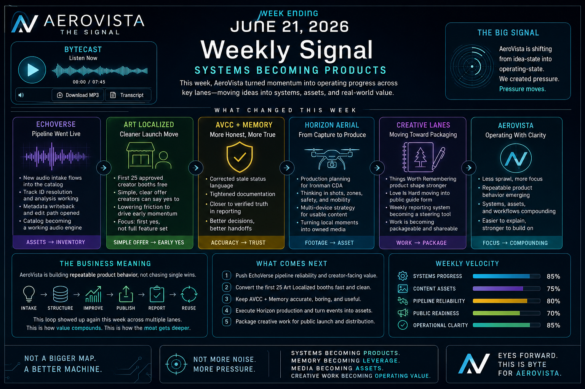

Last week, we explained the map. This week, we worked the machine. The signal is not more sprawl. It is cleaner pressure, stronger loops, and product behavior starting to repeat.
The infographic now sits below the MP3 player so the audio stays compact and the visual gets the full page width.

Episode theme: A Better Machine. Potential waits. Pressure moves.
The Signal
Last week was the map. This week was the machine.
AeroVista did not need another broad introduction this week. The real update is that several lanes moved from idea-state into operating-state. EchoVerse behaved more like a pipeline. Art Localized got a sharper launch offer. The control layer became more honest. Horizon moved toward production planning. The creative work moved closer to packaging.
Plain meaning: potential waits. Pressure moves. This week created pressure.
New audio can enter, sync into the catalog, resolve a track ID, run analysis, receive metadata, and move toward edit and enrichment. That turns audio from folder storage into organized inventory.
Repeatability became the deeper test
The question is no longer whether one track can be analyzed. The question is whether the next track takes less friction than the last one. That is how tooling becomes operating value.
Art Localized got a sharper door
The first twenty-five approved creator booths free is clean, easy to understand, and actionable. The first yes should not require a diagram.
The control layer got more honest
Old claims were corrected, status language tightened, and memory reporting moved closer to verified truth. The result is not prettier. It is more trustworthy.
Horizon shifted toward production
The focus moved from simply capturing footage to producing usable owned media: shots, zones, safe distance, mobile capture, multiple devices, and a story path.
Creative work moved toward packaging
Packaging means the work can leave the room. It can be opened, played, read, watched, shared, or sold by someone who was not part of the original conversation.
Business Meaning
Not one lucky product. Repeatable behavior.
The week’s business signal is compression: take what is scattered, make it clearer, and prove it can repeat.
The operating loop is simple: intake, structure, improve, publish, report, reuse. That loop showed up again this week. The value is not only in what gets shipped. The value is in making the next thing easier to ship.
Shareholder read: the company is building operating pressure, not just collecting ideas.
What Comes Next
Compression over sprawl
1Make the offer clearer. Keep Art Localized’s first-25-booths message simple enough to act on immediately.
2Make the pipeline cleaner. Keep reducing EchoVerse friction from intake through analysis, metadata, edit, and publish.
3Make the handoff easier. Verified status, clean docs, and fewer assumptions make the next operator faster.
4Make the public proof stronger. Package the best assets so they can be understood without the full backstory.
5Cut friction. Remove anything that makes the system harder to understand without making it more valuable.
Full Script
ByteCast transcript
Sound direction remains inside brackets. Spoken lines are outside the sound notes for clean TTS and Suno handling.
Open / close full spoken transcript
PT 1
[Signature sound open. Low digital pulse. Tight synth bed. No long intro. Close-mic, confident, moving faster than last week.]
This is The Signal.
Week ending June twenty-first, twenty twenty-six.
Last week, we explained the map.
This week, we worked the machine.
The story is not that AeroVista has a lot of lanes.
We already know that.
The story is that several of those lanes moved from idea-state into operating-state.
That is the difference between having potential and building pressure.
Potential waits.
Pressure moves.
And this week, we created pressure.
PT 2
[Steady pulse. Clean hi-hats. Slight lift. Focused and direct.]
The first major move was EchoVerse.
Not because it sounded good on paper.
Because the pipeline started behaving like a pipeline.
New audio can come in.
The catalog can pick it up.
The system can resolve a track I D.
Analysis can run.
Metadata can come back.
And the edit path can open.
That matters because creative assets are only as valuable as the system that can find them, improve them, and reuse them.
A song sitting in a folder is storage.
A song moving through a catalog, analyzer, and edit layer is inventory.
That is the shift.
EchoVerse is becoming less of a collection and more of a working audio engine.
PT 3
[Add subtle waveform shimmer. Controlled bass. Technical but not nerdy.]
The bigger signal underneath EchoVerse is repeatability.
We are not just asking, can we analyze one track?
We are asking, can the system handle the next track with less friction than the last one?
That is the test.
Every working loop should reduce future effort.
Every resolved track should make the catalog smarter.
Every edit handoff should make publishing easier.
Every cleanup should make the next operator faster.
That is how a tool becomes an asset.
And that is how an asset becomes part of the company’s operating value.
PT 4
[Brighter layer. Soft public-facing energy. Keep the pace crisp.]
Art Localized also got sharper.
The move is simple.
First twenty-five approved creator booths free.
That gives us something clean to say.
Something easy to understand.
Something a creator can act on without needing a tour of the whole system.
That matters.
A launch offer should not need a diagram.
It should feel obvious.
You are local.
You create.
You get a booth.
We help make it visible.
That is enough for the first door to open.
The goal now is not to explain every future possibility.
The goal is to make the first yes easy.
PT 5
[Music lowers. Operator-console texture. Honest, grounded, a little tougher.]
Behind the scenes, the control layer got cleaned up.
This is the work most people will never see.
But it matters.
Old claims got corrected.
Status language got tightened.
Memory reporting got closer to verified truth.
That may not sound exciting.
Good.
The control layer should not need drama.
It needs accuracy.
If the system says something is done, it should be done.
If something is still rough, it should say that.
If a future builder needs context, the handoff should not require guesswork.